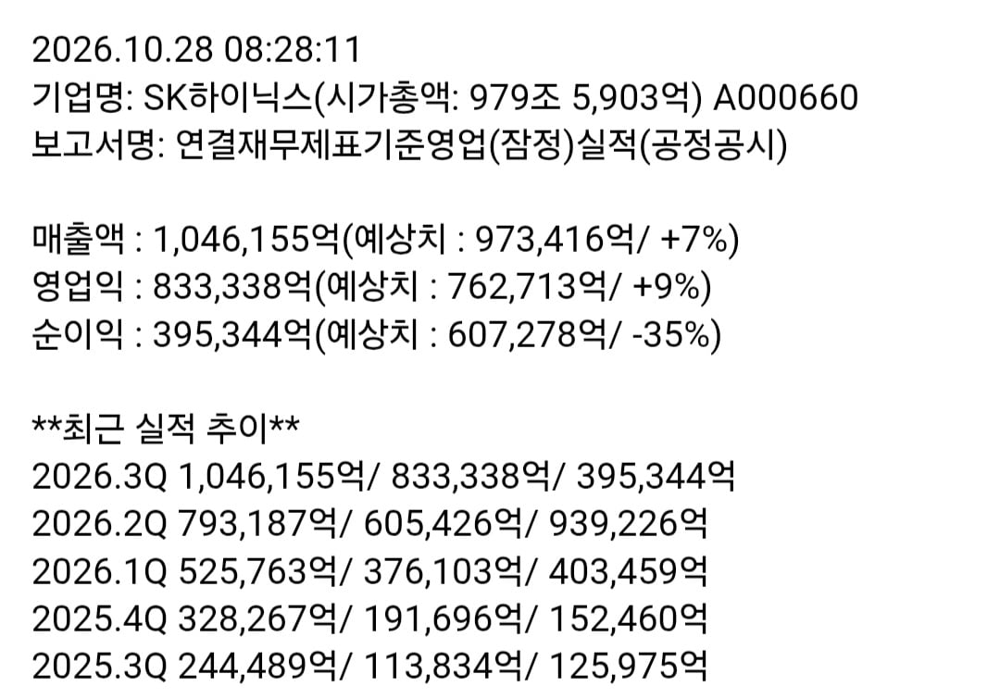

매출 104조
영익 83조
+특별배당금 주당 2만원, 자사주 매입 20조

매출 104조
영익 83조
+특별배당금 주당 2만원, 자사주 매입 20조
어차피 역대급실적발표해도 주가는 안올라감
정확하게는 잠깐 올랐다가 또 트럼프가어쩌고 하면서 원래자리로 돌아감
맞음. 단일종목 레버리지 우리나라에 없어지긴 전엔 힘들걸..pbr이 4가 안되는데 이게 정상가는 아니지. 지금 본주 사면 3~4년후엔 2배는 찍지 않을까?
레버리지가 없어진다는 조건이 개빡세보이네요
미국에선 벌써 없어졌고, 현재 같은 주식흐름이라면 2-3년이면 무조건 청산되서 없어짐. 기본적으로 저런 레버리지 상품들은 수수료가 세서 주가가 횡보해도 원금이 까임. 떨어지면 무조건 까이고. 레버리지는 단기투자로만 가지고 있어야 하는데 지금 상당수 사람들이 단일종목 레버리지에 묶여있음. 떨어지고 조금 오르고 다시 떨어지는 식으로 계속가면 금방 자연 청산 될것임. 이건 증권계에서도 이미 나온 이야기임
ㄹㅇ 팔 애들은 지금 팔아라 다시 주저 앉는다
지금 엄청 오르는중인데 이정도면 감동이지 물론 300만 갈려면 까마득하지만..
맨날 떨어지더니 진짜 오랜만에 좀 오르네
감동이 없어
오후장되면 다시 처박는다 지금 팔어라 누구나 아는 실적재료는 아무 의미없다 호재아니다
그럼 숏쳐
29년까지 완판ㅋㅋ